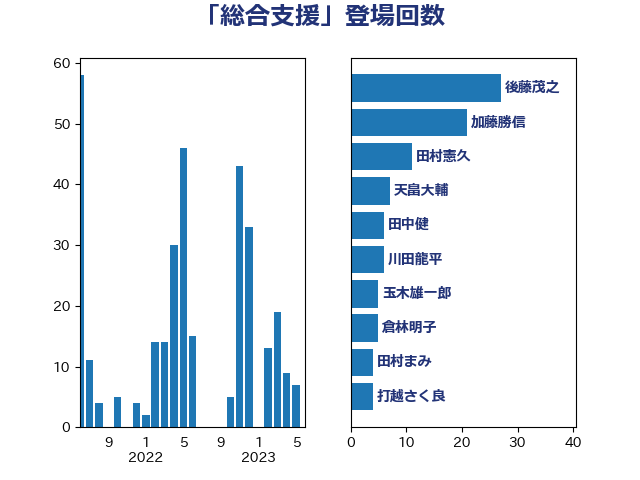

単語「総合支援」

| 田村憲久 | 自由民主党 | 48 回 |
| 後藤茂之 | 自由民主党 | 27 回 |
| 野上浩太郎 | 自由民主党 | 8 回 |
| 玉木雄一郎 | 国民民主党 | 7 回 |
| 川田龍平 | 立憲民主党 | 6 回 |
| 石井苗子 | 日本維新の会 | 6 回 |
| 西村康稔 | 自由民主党 | 6 回 |
| 古屋範子 | 公明党 | 5 回 |
| 佐藤英道 | 公明党 | 4 回 |
| 宮本徹 | 日本共産党 | 4 回 |
| 山本博司 | 公明党 | 4 回 |
| 岸田文雄 | 自由民主党 | 4 回 |
| 礒崎哲史 | 国民民主党 | 4 回 |
| 菅義偉 | 自由民主党 | 4 回 |
| 伊波洋一 | 無所属 | 3 回 |
| 山井和則 | 立憲民主党 | 3 回 |
| 松野博一 | 自由民主党 | 3 回 |
| 横沢高徳 | 立憲民主党 | 3 回 |
| 浅野哲 | 国民民主党 | 3 回 |
| 田村貴昭 | 日本共産党 | 3 回 |
| 竹内譲 | 公明党 | 3 回 |
| たがや亮 | れいわ新選組 | 2 回 |
| 下野六太 | 公明党 | 2 回 |
| 井坂信彦 | 立憲民主党 | 2 回 |
| 伊藤渉 | 公明党 | 2 回 |
| 倉林明子 | 日本共産党 | 2 回 |
| 勝目康 | 自由民主党 | 2 回 |
| 土田慎 | 自由民主党 | 2 回 |
| 宮内秀樹 | 自由民主党 | 2 回 |
| 柚木道義 | 立憲民主党 | 2 回 |
| 石井啓一 | 公明党 | 2 回 |
| 緑川貴士 | 立憲民主党 | 2 回 |
| 舟山康江 | 国民民主党 | 2 回 |
| 舩後靖彦 | れいわ新選組 | 2 回 |
| 西田実仁 | 公明党 | 2 回 |
| 金城泰邦 | 公明党 | 2 回 |
| 鈴木俊一 | 自由民主党 | 2 回 |
| こやり隆史 | 自由民主党 | 1 回 |
| 一谷勇一郎 | 日本維新の会 | 1 回 |
| 下村博文 | 自由民主党 | 1 回 |
| 中山展宏 | 自由民主党 | 1 回 |
| 中野英幸 | 自由民主党 | 1 回 |
| 佐藤啓 | 自由民主党 | 1 回 |
| 古賀友一郎 | 自由民主党 | 1 回 |
| 吉川ゆうみ | 自由民主党 | 1 回 |
| 坂本哲志 | 自由民主党 | 1 回 |
| 塩崎彰久 | 自由民主党 | 1 回 |
| 塩川鉄也 | 日本共産党 | 1 回 |
| 塩村あやか | 立憲民主党 | 1 回 |
| 奥野総一郎 | 立憲民主党 | 1 回 |
| 安江伸夫 | 公明党 | 1 回 |
| 安達澄 | 無所属 | 1 回 |
| 宮崎雅夫 | 自由民主党 | 1 回 |
| 小宮山泰子 | 立憲民主党 | 1 回 |
| 尾崎正直 | 自由民主党 | 1 回 |
| 山本香苗 | 公明党 | 1 回 |
| 徳永エリ | 立憲民主党 | 1 回 |
| 斉藤鉄夫 | 公明党 | 1 回 |
| 斎藤洋明 | 自由民主党 | 1 回 |
| 早稲田ゆき | 立憲民主党 | 1 回 |
| 朝日健太郎 | 自由民主党 | 1 回 |
| 梶山弘志 | 自由民主党 | 1 回 |
| 横山信一 | 公明党 | 1 回 |
| 浮島智子 | 公明党 | 1 回 |
| 熊野正士 | 公明党 | 1 回 |
| 牧原秀樹 | 自由民主党 | 1 回 |
| 田中健 | 国民民主党 | 1 回 |
| 田名部匡代 | 立憲民主党 | 1 回 |
| 矢倉克夫 | 公明党 | 1 回 |
| 石垣のりこ | 立憲民主党 | 1 回 |
| 福島みずほ | 社会民主党 | 1 回 |
| 葉梨康弘 | 自由民主党 | 1 回 |
| 藤原崇 | 自由民主党 | 1 回 |
| 赤羽一嘉 | 公明党 | 1 回 |
| 逢坂誠二 | 立憲民主党 | 1 回 |
| 道下大樹 | 立憲民主党 | 1 回 |
| 野間健 | 立憲民主党 | 1 回 |
| 金子恵美 | 立憲民主党 | 1 回 |
| 高橋光男 | 公明党 | 1 回 |
| 高橋千鶴子 | 日本共産党 | 1 回 |
| 鰐淵洋子 | 公明党 | 1 回 |